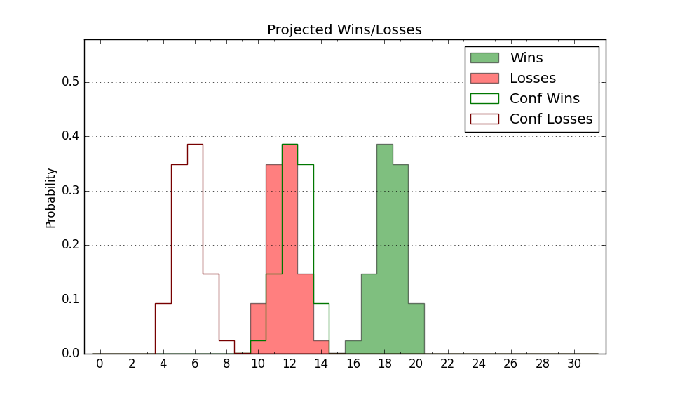

| Home | Game Probabilities | Conferences | Preseason Predictions | Odds Charts | NCAA Tournament |
| City: | Philadelphia, Pennsylvania | |
| Conference: | Colonial (3rd)
| |
| Record: | 9-4 (Conf) 15-10 (Overall) | |
| Ratings: | Comp.: 4.5 (126th) Net: 4.5 (127th) Off: 105.8 (160th) Def: 101.3 (114th) SoR: 0.0 (142nd) |
| Remaining | ||||||
|---|---|---|---|---|---|---|
| Date | Opponent | Win Prob | Pred. | |||
| 2/17 | Campbell (289) | 89.6% | W 72-58 | |||
| 2/22 | @ Hofstra (136) | 38.6% | L 64-67 | |||
| 2/26 | @ Delaware (145) | 39.7% | L 66-69 | |||
| 2/29 | Stony Brook (217) | 82.2% | W 73-63 | |||
| 3/2 | Northeastern (223) | 82.7% | W 73-63 | |||
| Previous | Game Score | |||||
| Date | Opponent | Win Prob | Result | Off | Def | Net |
| 11/7 | @La Salle (249) | 62.1% | L 61-67 | -14.9 | 3.7 | -11.3 |
| 11/11 | @Winthrop (148) | 40.8% | W 74-72 | 15.7 | -8.5 | 7.2 |
| 11/14 | Temple (225) | 82.8% | L 64-66 | -18.4 | -1.2 | -19.6 |
| 11/17 | Fairfield (182) | 77.7% | W 65-47 | -11.5 | 30.1 | 18.6 |
| 11/19 | Queens (286) | 89.4% | W 62-52 | -18.5 | 11.4 | -7.0 |
| 11/26 | @Old Dominion (275) | 68.7% | L 61-68 | -17.0 | 5.7 | -11.2 |
| 11/29 | @Lafayette (310) | 76.6% | W 69-48 | 3.0 | 12.2 | 15.2 |
| 12/2 | (N) Villanova (29) | 18.5% | W 57-55 | 2.5 | 15.7 | 18.2 |
| 12/5 | @Princeton (66) | 18.3% | L 70-81 | 6.5 | -7.1 | -0.7 |
| 12/9 | @West Virginia (144) | 39.7% | L 60-66 | -12.0 | 0.3 | -11.6 |
| 12/16 | Albany (264) | 86.1% | W 71-52 | -12.5 | 21.5 | 9.0 |
| 12/22 | @Bryant (150) | 41.5% | L 86-104 | 10.2 | -36.3 | -26.1 |
| 1/1 | Hampton (350) | 96.4% | W 99-65 | 17.0 | -5.5 | 11.5 |
| 1/4 | UNC Wilmington (102) | 57.1% | W 78-63 | 2.7 | 16.9 | 19.7 |
| 1/6 | @William & Mary (329) | 82.1% | W 77-55 | 9.0 | 10.0 | 19.0 |
| 1/11 | @North Carolina A&T (339) | 84.9% | W 67-63 | -9.3 | 3.7 | -5.6 |
| 1/13 | @Elon (316) | 78.4% | W 89-69 | 32.6 | -15.1 | 17.5 |
| 1/18 | Monmouth (195) | 79.3% | W 78-74 | 22.2 | -25.9 | -3.7 |
| 1/20 | Delaware (145) | 69.1% | W 86-67 | 25.9 | -6.8 | 19.1 |
| 1/25 | @Towson (142) | 39.5% | L 67-70 | 8.2 | -5.4 | 2.8 |
| 1/27 | North Carolina A&T (339) | 95.1% | W 62-47 | -21.4 | 15.8 | -5.7 |
| 2/1 | @Monmouth (195) | 52.9% | L 62-67 | -13.1 | 3.9 | -9.2 |
| 2/8 | @UNC Wilmington (102) | 28.1% | L 56-75 | -14.2 | -6.7 | -20.9 |
| 2/10 | @College of Charleston (124) | 34.5% | L 70-80 | -1.7 | -11.0 | -12.8 |
| 2/15 | Hofstra (136) | 68.2% | W 79-77 | 16.5 | -25.0 | -8.5 |
| Stats & Trends | |||||
|---|---|---|---|---|---|
| Current | Day | Week | Month | Season | |
| Composite | 4.5 | -0.3 | -1.2 | -2.6 | +0.3 |
| Comp Rank | 126 | -1 | -8 | -21 | -12 |
| Net Efficiency | 4.5 | -0.3 | -1.2 | -2.9 | -- |
| Net Rank | 127 | -1 | -9 | -22 | -- |
| Off Efficiency | 105.8 | +0.8 | +0.5 | +1.3 | -- |
| Off Rank | 160 | +12 | +2 | +3 | -- |
| Def Efficiency | 101.3 | -1.1 | -1.8 | -4.1 | -- |
| Def Rank | 114 | -22 | -31 | -52 | -- |
| SoS Rank | 223 | +1 | +23 | +54 | -- |
| Exp. Wins | 18.3 | +0.3 | -0.2 | -1.2 | -0.4 |
| Exp. Conf Wins | 12.3 | +0.3 | -0.2 | -1.2 | +0.2 |
| Conf Champ Prob | 9.0 | +1.5 | -11.6 | -35.0 | -14.2 |

| Advanced Stats | ||
|---|---|---|
| Stat | Value | Rank |
| Off Eff FG % | 0.491 | 227 |
| Off Ast Ratio | 0.130 | 248 |
| Off ORB% | 0.317 | 73 |
| Off TO Rate | 0.142 | 140 |
| Off FT Ratio | 0.302 | 249 |
| Def Eff FG % | 0.484 | 99 |
| Def Ast Ratio | 0.135 | 121 |
| Def ORB% | 0.248 | 63 |
| Def TO Rate | 0.122 | 329 |
| Def FT Ratio | 0.274 | 56 |